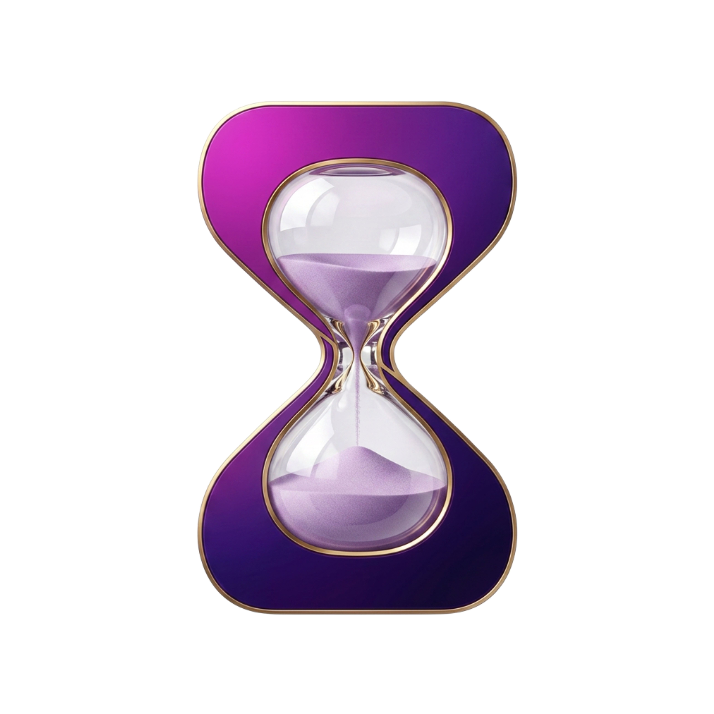

<!DOCTYPE html>
<html lang="en">
<head>
<meta charset="UTF-8">
<title>Time Vault | Progress banner</title>
<link href="https://fonts.googleapis.com/css2?family=Inter:wght@300;400;500;600;700;800&family=JetBrains+Mono:wght@400;500;600;700&family=Cinzel:wght@600;700;800;900&display=swap" rel="stylesheet">
<!--
    The banner for one shipped thing in the Phase 2 run.

    Everything that changes is in the POST object at the bottom of this file.
    The code card holds real source, lifted from the thing that actually
    shipped, because a screenshot of code nobody wrote is the exact kind of
    thing this project does not do.

    Square only, 1080x1080. It is the format that wins on a phone timeline,
    which is where nearly all of this gets read, and keeping one render means
    there is never a wide version saying something slightly different.

    There is deliberately no day counter. "Day 4 of 10" turns a run of good
    work into a debt the moment a day slips, and the shipping is the point,
    not the streak.

    Render with: python marketing/render_progress.py
-->
<style>
    :root{
        --bg:#060309; --violet:#8B5CF6; --violet-lit:#A78BFA; --magenta:#C026D3;
        --silver:#B9ABCE; --silver-dim:#8C7CA6; --silver-subtle:#5B5075; --white:#FAFAFA;
        --gold:#D4AF37; --gold-bright:#F0DA9B; --gold-deep:#8A6A1F;
        --gold-line:rgba(212,175,55,0.28);
        --green:#34D399;
        --fd:'Cinzel',Georgia,serif; --fb:'Inter',system-ui,sans-serif;
        --fm:'JetBrains Mono',ui-monospace,monospace;
    }
    *{margin:0;padding:0;box-sizing:border-box;}
    body{background:#131017;display:flex;justify-content:center;
         padding:34px;font-family:var(--fb);}

    #frame{
        position:relative;width:1080px;height:1080px;overflow:hidden;flex-shrink:0;
        color:var(--white);
        background:
            radial-gradient(ellipse 50% 55% at 92% 8%, rgba(192,38,211,0.13), transparent 62%),
            radial-gradient(ellipse 58% 65% at 8% 0%, rgba(139,92,246,0.17), transparent 66%),
            radial-gradient(ellipse 70% 50% at 50% 108%, rgba(212,175,55,0.07), transparent 60%),
            linear-gradient(180deg,#0A0512,#060309 62%);
    }

    /* Faint hairline grid, so the ground reads as engineering rather than as a
       gradient poster. */
    .grid{position:absolute;inset:0;opacity:0.5;
        background-image:
            linear-gradient(rgba(139,92,246,0.055) 1px,transparent 1px),
            linear-gradient(90deg,rgba(139,92,246,0.055) 1px,transparent 1px);
        background-size:56px 56px;
        -webkit-mask-image:radial-gradient(ellipse 78% 78% at 50% 44%,#000 20%,transparent 82%);
                mask-image:radial-gradient(ellipse 78% 78% at 50% 44%,#000 20%,transparent 82%);}
    .rule{position:absolute;inset:26px;border:1px solid var(--gold-line);border-radius:16px;
        box-shadow:inset 0 0 90px rgba(74,44,110,0.25);pointer-events:none;z-index:6;}
    .corner{position:absolute;width:30px;height:30px;border:2px solid var(--gold);
        opacity:.62;z-index:7;}
    .c1{top:19px;left:19px;border-right:0;border-bottom:0;border-radius:14px 0 0 0;}
    .c2{top:19px;right:19px;border-left:0;border-bottom:0;border-radius:0 14px 0 0;}
    .c3{bottom:19px;left:19px;border-right:0;border-top:0;border-radius:0 0 0 14px;}
    .c4{bottom:19px;right:19px;border-left:0;border-top:0;border-radius:0 0 14px 0;}

    .body{position:absolute;inset:0;z-index:4;display:flex;flex-direction:column;
        justify-content:center;gap:38px;padding:0 82px;}

    /* -------------------------------------------------------------- the claim */
    .brandrow{display:flex;align-items:center;gap:13px;margin-bottom:30px;}
    .brandrow img{height:40px;width:auto;filter:drop-shadow(0 2px 12px rgba(139,92,246,0.55));}
    .brandrow .wm{font-family:var(--fd);font-size:1.02rem;font-weight:700;
        letter-spacing:0.15em;color:var(--white);}
    .brandrow .wm b{color:var(--violet-lit);font-weight:700;}

    .eyebrow{font-family:var(--fm);font-size:0.72rem;font-weight:600;letter-spacing:0.26em;
        color:var(--gold);text-transform:uppercase;display:flex;align-items:center;
        gap:11px;margin-bottom:20px;}
    .eyebrow::before{content:'';width:40px;height:1px;
        background:linear-gradient(90deg,var(--gold),transparent);}
    .live{width:7px;height:7px;border-radius:50%;background:var(--green);
        box-shadow:0 0 9px rgba(52,211,153,0.85);}

    h1{position:relative;font-family:var(--fd);font-weight:700;font-size:3.6rem;
        line-height:1.06;letter-spacing:0.005em;margin-bottom:24px;
        text-shadow:0 0 40px rgba(139,92,246,0.5),0 0 4px rgba(139,92,246,0.3);}
    h1::before{content:'';position:absolute;left:-8%;top:-16%;width:118%;height:132%;
        z-index:-1;filter:blur(30px);
        background:radial-gradient(ellipse 52% 58% at 32% 46%,rgba(139,92,246,0.3),transparent 72%);}
    h1 .g{background:linear-gradient(180deg,var(--gold-bright) 6%,var(--gold) 48%,var(--gold-deep) 98%);
        -webkit-background-clip:text;background-clip:text;-webkit-text-fill-color:transparent;
        text-shadow:none;filter:drop-shadow(0 0 22px rgba(212,175,55,0.42));}

    .sub{font-size:1.2rem;line-height:1.62;color:var(--silver);font-weight:350;
        max-width:790px;margin-bottom:32px;}
    .sub b{color:var(--white);font-weight:600;}

    /* Facts, each one a thing a stranger can go and check. */
    .facts{display:flex;flex-wrap:wrap;gap:9px;margin-bottom:34px;}
    .fact{font-family:var(--fm);font-size:0.72rem;font-weight:500;letter-spacing:0.09em;
        text-transform:uppercase;padding:0.44rem 0.82rem;border-radius:6px;
        color:var(--silver);background:rgba(139,92,246,0.08);
        border:1px solid rgba(139,92,246,0.22);}
    .fact.pass{color:var(--green);background:rgba(52,211,153,0.08);
        border-color:rgba(52,211,153,0.28);}
    .fact.next{color:var(--gold);background:rgba(212,175,55,0.07);
        border-color:rgba(212,175,55,0.26);}

    .foot{display:flex;align-items:center;gap:16px;}
    .pill{font-family:var(--fm);font-weight:700;font-size:0.95rem;color:#0A0512;
        background:linear-gradient(135deg,var(--gold-bright),var(--gold));
        padding:0.42rem 1.05rem;border-radius:100px;letter-spacing:0.04em;}
    .where{font-family:var(--fm);font-size:0.74rem;letter-spacing:0.13em;
        color:var(--silver-dim);text-transform:uppercase;}
    .where b{color:var(--gold);font-weight:600;}

    /* ------------------------------------------------------------ code card */
    .card{border-radius:13px;overflow:hidden;
        background:linear-gradient(180deg,rgba(16,9,26,0.97),rgba(9,5,16,0.99));
        border:1px solid rgba(139,92,246,0.3);
        box-shadow:0 34px 80px rgba(0,0,0,0.62),0 0 70px rgba(139,92,246,0.16),
                   inset 0 1px 0 rgba(255,255,255,0.045);}
    .bar{display:flex;align-items:center;gap:9px;padding:0.72rem 1.05rem;
        background:rgba(139,92,246,0.09);border-bottom:1px solid rgba(139,92,246,0.2);}
    .led{width:9px;height:9px;border-radius:50%;background:rgba(185,171,206,0.28);}
    .led.on{background:var(--green);box-shadow:0 0 9px rgba(52,211,153,0.8);}
    .path{font-family:var(--fm);font-size:0.76rem;color:var(--silver-dim);
        letter-spacing:0.04em;margin-left:5px;}
    .path b{color:var(--silver);font-weight:500;}

    pre{padding:1.25rem 1.35rem;font-family:var(--fm);font-size:1.05rem;
        line-height:1.66;color:#CFC4E4;overflow:hidden;
        /* JetBrains Mono turns != into a single glyph. On a banner about
           reading the actual file, the characters should be the ones in the
           file. */
        font-variant-ligatures:none;}
    pre .row{display:block;margin:0 -1.35rem;padding:0 1.35rem;}
    pre .ln{display:inline-block;width:2.2em;color:var(--silver-subtle);
        user-select:none;}
    .cm{color:#6E6288;font-style:italic;}
    .kw{color:#C084FC;}
    .ty{color:#7DD3FC;}
    .fn{color:var(--gold-bright);}
    .er{color:#F0A0B4;}
    .nm{color:#9DE3C0;}

    /* The one line the whole card exists to make readable. */
    .row.hi{background:linear-gradient(90deg,rgba(212,175,55,0.16),rgba(212,175,55,0.02));
        box-shadow:inset 3px 0 0 var(--gold);}

    /* Real output from the real command, which is the whole point. */
    .term{border-top:1px solid rgba(139,92,246,0.2);padding:0.95rem 1.35rem;
        font-family:var(--fm);font-size:0.92rem;line-height:1.75;
        background:rgba(139,92,246,0.05);}
    .term .p{color:var(--violet-lit);}
    .term .c{color:var(--silver);}
    .term .ok{color:var(--green);}
    .term .t{color:var(--silver-subtle);}
</style>
</head>
<body>

<div id="frame">
    <div class="grid"></div>
    <div class="rule"></div>
    <i class="corner c1"></i><i class="corner c2"></i>
    <i class="corner c3"></i><i class="corner c4"></i>
    <div class="body">
        <div data-say></div>
        <div data-card></div>
    </div>
</div>

<script>
// ---------------------------------------------------------------------------
// Everything below the line changes per post. Nothing above it should need to.
// ---------------------------------------------------------------------------
const POST = {
    // Names the output file. Keep it short and specific to what shipped.
    slug: 'escrow-written',
    eyebrow: 'Phase 2 &middot; The Contracts',
    // <span class="g"> paints a phrase gold. Keep it to one phrase.
    headline: 'The escrow is <span class="g">written</span>.',
    sub: 'A buyer’s payment goes in before the work starts, and it comes out only ' +
         'the ways written into the contract. <b>None of them run through Time Vault.</b>',
    facts: [
        { text: '31 tests passing', kind: 'pass' },
        { text: 'solc 0.8.24 &middot; 0 warnings', kind: '' },
        { text: 'testnet next', kind: 'next' },
    ],
    file: 'contracts/src/<b>TimeVaultEscrow.sol</b>',
    terminal: { cmd: 'npx hardhat test', result: '31 passing', note: '(2s)' },
    // Real source. Line numbers are the real ones.
    code: [
        [303, '<span class="cm">/// The review window ran out and nobody objected,</span>'],
        [304, '<span class="cm">/// so the provider gets paid. Anyone may call this.</span>'],
        [305, '<span class="kw">function</span> <span class="fn">settle</span>(<span class="ty">uint256</span> id) <span class="kw">external</span> guarded {'],
        [306, '    <span class="ty">Order</span> <span class="kw">storage</span> o = _orders[id];'],
        [307, '    <span class="kw">if</span> (o.state != <span class="nm">State.Review</span>) <span class="kw">revert</span> <span class="er">WrongState</span>();'],
        [308, '    <span class="kw">if</span> (block.timestamp <= o.reviewUntil) <span class="kw">revert</span> <span class="er">TooEarly</span>();'],
        [309, '    <span class="fn">_release</span>(id, o);', true],
        [310, '}'],
    ],
    footNote: 'Read it &middot; <b>github.com/timevaulttv</b>',
};

const say = d => `
    <div class="brandrow">
        
        <span class="wm">TIME <b>VAULT</b></span>
    </div>
    <div class="eyebrow"><span class="live"></span>${d.eyebrow}</div>
    <h1>${d.headline}</h1>
    <p class="sub">${d.sub}</p>
    <div class="facts">${d.facts.map(f =>
        `<span class="fact ${f.kind}">${f.text}</span>`).join('')}</div>
    <div class="foot">
        <span class="pill">$TV</span>
        <span class="where">${d.footNote}</span>
    </div>`;

const card = d => `
    <div class="card">
        <div class="bar">
            <i class="led on"></i><i class="led"></i><i class="led"></i>
            <span class="path">${d.file}</span>
        </div>
        <pre>${d.code.map(([n, line, hot]) =>
            `<span class="row${hot ? ' hi' : ''}"><span class="ln">${n}</span>${line}</span>`
        ).join('')}</pre>
        ${d.terminal ? `<div class="term">
            <span class="p">$</span> <span class="c">${d.terminal.cmd}</span><br>
            <span class="ok">${d.terminal.result}</span>
            <span class="t">${d.terminal.note}</span>
        </div>` : ''}
    </div>`;

document.querySelector('[data-say]').innerHTML = say(POST);
document.querySelector('[data-card]').innerHTML = card(POST);
</script>
</body>
</html>
